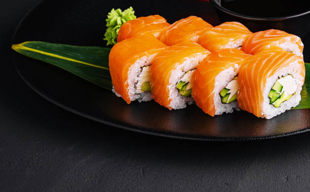

Korean Sushi

Over the last while I have slowly been
trying to free up some space in my freezer and I
recently came across some pizza sauce that I had
left over after making a pizza a while back.
As soon as I stumbled upon it I remembered
thinking that I had wanted to use it to
make a hot cheesy pizza dip when I put
it in the freezer. Once I had that thought there was no
turning back and I was already dreaming up recipes for the dip.
Ingredients
- 2 tbsps cider vinegar
- 1 eggs well beaten
- tbsp vegetable oil
- 2 eggs
- cucumber julienned
- 2 leaves chard
- 2 cups water
- 2 carrot julienned
Steps
- In a small bowl crack the eggs and beat them really well with a pinch of salt.
.
- In a big skillet melt the oil and butter over medium high heat. If you're using a
vegetable that might take longer to cook than others, add those to the pan - for example,
asparagus or broccoli. Add a couple pinches of salt, stir, cover, and cook for a
couple minutes.
Pull about 1/3 of the vegetables out of the pan and set them aside.
- Now, add the pasta to the skillet, and toss well. Once the pasta is hot, turn down the heat, wait a moment, then quickly stir in the eggs. Stir well, then cover the pan, remove from heat, and let everything sit for a minute. Uncover, give everything another toss, the egg should be cooked through. Taste, and adjust the seasoning before dividing between two plates. Top with the reserved vegetables, and some chopped avocado.